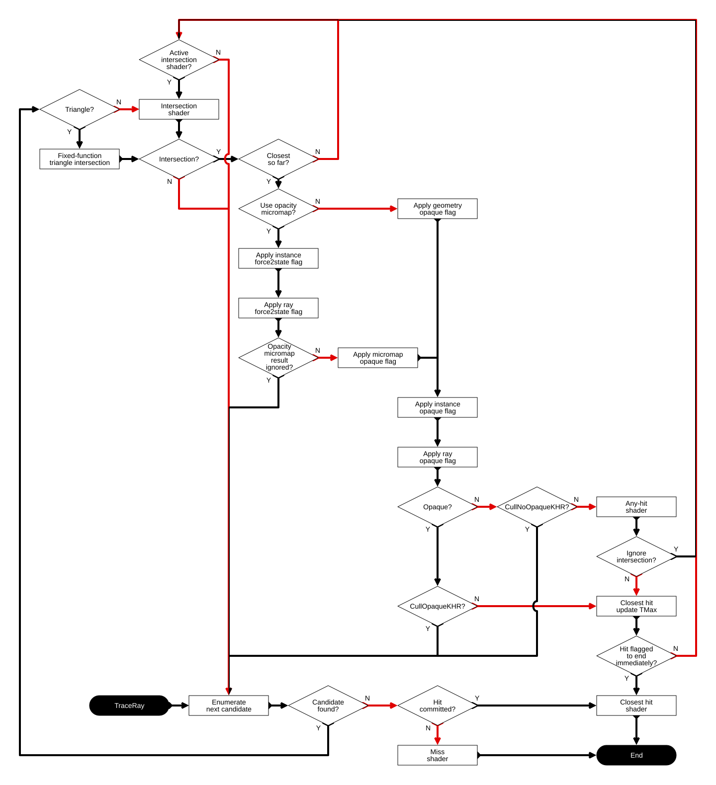

VK_KHR_opacity_micromap
VK_KHR_opacity_micromap adds a new type of acceleration structure to associate micro-geometry information with geometry in an acceleration structure as well as a specific application of an opacity micromap to accelerate sub-triangle opacity without having to call a user any-hit shader.
This is a promotion of VK_EXT_opacity_micromap with significant changes to the API, however, the overall traversal behavior and micromap structure are similar to the original extension.
1. Problem Statement
Geometry in an acceleration structure in the basic ray tracing extensions contains either geometric information or bounds for custom geometry. There are some applications where having a more compact representation of sub-triangle level information can be useful. One specific application is handling opacity information more efficiently at traversal time than having to return to an application-provided any-hit shader.
2. Solution Space
The mapping of the data onto the mesh is one design choice. Traditionally, texturing onto geometry is accomplished by application-provided texture coordinates, but in this case that would add significant extra metadata and require potentially more complicated sampling. A quad domain is natural for some interpretations of map data, but that may require more information from the application on at least adjacency information, even if not full UV coordinates. A triangular mapping is very amenable to performant implementations both in hardware and in software while not requiring extra information from the application outside of a given triangle.
Relatedly, the mapping from triangle to index is another design choice. With raster images, pitch ordering is the de facto standard for interoperating images. There is no direct analogy to a triangular domain, though, and the most similar mapping is significantly less trivial than raster images. Moving to a mapping with more locality gives gains in terms of locality of processing, ease of downsampling, and similar operations.
3. Proposal
The extension defines a new VkAccelerationStructureKHR opacity micromap type.
The micromap information is defined on the domain of subdivided triangles on a given acceleration
structure geometry triangle. The build information contains usage information to compute the size including the number of triangles
with a given subdivision level and format. For an opacity micromap, the micromap contains either 1-bit or 2-bit information
which controls how the traversal is performed when combined with a set of flags.
Once the micromap is built an extension structure can attach it to VkAccelerationStructureGeometryKHR along with mapping information from each triangle in the geometry to a specified triangle index in the micromap.
3.1. Get Micromap Size
First, the application needs to determine the size required by the micromap build, which can be queried with:
VKAPI_ATTR void VKAPI_CALL vkGetAccelerationStructureBuildSizesKHR(
VkDevice device,
VkAccelerationStructureBuildTypeKHR buildType,
const VkAccelerationStructureBuildGeometryInfoKHR* pBuildInfo,
const uint32_t* pMaxPrimitiveCounts,
VkAccelerationStructureBuildSizesInfoKHR* pSizeInfo);-
buildTypeis the type of build to be performed, must beVK_ACCELERATION_STRUCTURE_BUILD_TYPE_DEVICE_KHRas micromaps do not support host commands -
pBuildInfocontains the build parameters that will be used to build the micromap -
pMaxPrimitiveCountsdefines the number of primitives built into each geometry, given micromaps do not define primitives, this pointer must be null
The srcAccelerationStructure, dstAccelerationStructure, mode and scratchData,
members of pBuildInfo are ignored by this command.
Likewise, the data and triangleArray members of any VkAccelerationStructureGeometryMicromapDataKHR
structure are ignored by this command.
See Build Micromap for more information about how to fill in this structure.
The type, flags, and either ppUsageCounts or pUsageCounts members
must have identical information as the build. Meaning, the latter pointers
do not need to be the same, but must specify a micromap with identical topology.
typedef struct VkAccelerationStructureBuildSizesInfoKHR {
VkStructureType sType;
const void* pNext;
VkDeviceSize accelerationStructureSize;
VkDeviceSize updateScratchSize;
VkDeviceSize buildScratchSize;
} VkAccelerationStructureBuildSizesInfoKHR;-
accelerationStructureSizeis the size that thedstAccelerationStructureprovided to build needs to be created with -
updateScratchSizeis the size that thescratchDataprovided during updates needs to be allocated as, given that micromaps do not support updates, implementations must set this value to0 -
buildScratchSizeis the size that thescratchDataprovided to build needs to allocated as
3.2. Create Micromap
Micromaps must be created by vkCreateAccelerationStructure2KHR provided by
VK_KHR_device_address_commands before they can be built and used in traversal.
vkCreateAccelerationStructureKHR cannot be used to create micromaps.
Buffers used in builds require flags provided at buffer creation:
VK_BUFFER_USAGE_ACCELERATION_STRUCTURE_BUILD_INPUT_READ_ONLY_BIT_KHR = 0x00080000;
VK_BUFFER_USAGE_ACCELERATION_STRUCTURE_STORAGE_BIT_KHR = 0x00100000;-
VK_BUFFER_USAGE_ACCELERATION_STRUCTURE_BUILD_INPUT_READ_ONLY_BIT_KHRindicates that the buffer can be used as a read-only input to building acceleration structures, which includes thedataandtriangleArraymembers for micromaps -
VK_BUFFER_USAGE_ACCELERATION_STRUCTURE_STORAGE_BIT_KHRallows the buffer to be used as the backing buffer for the address provided to theVkAccelerationStructureCreateInfo2KHR::addressRangemember
typedef enum VkAccelerationStructureCreateFlagBitsKHR {
VK_ACCELERATION_STRUCTURE_CREATE_DEVICE_ADDRESS_CAPTURE_REPLAY_BIT_KHR = 0x00000001,
VK_ACCELERATION_STRUCTURE_CREATE_DESCRIPTOR_BUFFER_CAPTURE_REPLAY_BIT_EXT = 0x00000008,
VK_ACCELERATION_STRUCTURE_CREATE_MOTION_BIT_NV = 0x00000004,
} VkAccelerationStructureCreateFlagBitsKHR;
typedef VkFlags VkAccelerationStructureCreateFlagsKHR;-
VK_ACCELERATION_STRUCTURE_CREATE_DEVICE_ADDRESS_CAPTURE_REPLAY_BIT_KHRspecifies that the micromap can be used in capture/replay, this is the only permitted flag for micromaps
typedef enum VkAccelerationStructureTypeKHR {
VK_ACCELERATION_STRUCTURE_TYPE_TOP_LEVEL_KHR = 0,
VK_ACCELERATION_STRUCTURE_TYPE_BOTTOM_LEVEL_KHR = 1,
VK_ACCELERATION_STRUCTURE_TYPE_GENERIC_KHR = 2,
VK_ACCELERATION_STRUCTURE_TYPE_OPACITY_MICROMAP_KHR = 1000623000,
VK_ACCELERATION_STRUCTURE_TYPE_TOP_LEVEL_NV = VK_ACCELERATION_STRUCTURE_TYPE_TOP_LEVEL_KHR,
VK_ACCELERATION_STRUCTURE_TYPE_BOTTOM_LEVEL_NV = VK_ACCELERATION_STRUCTURE_TYPE_BOTTOM_LEVEL_KHR,
} VkAccelerationStructureTypeKHR;-
VK_ACCELERATION_STRUCTURE_TYPE_OPACITY_MICROMAP_KHRspecifies that this micromap is for opacity -
VK_ACCELERATION_STRUCTURE_TYPE_GENERIC_KHRspecifies that this acceleration structure could be used for top, bottom, or micromap types. Build will determine the type of acceleration structure.
3.3. Build Micromap
Micromaps must be built before use by vkCmdBuildAccelerationStructuresKHR, this work is performed on the device.
vkBuildAccelerationStructuresKHR and
vkCmdBuildAccelerationStructuresIndirectKHR cannot be used to
build micromaps.
VKAPI_ATTR void VKAPI_CALL vkCmdBuildAccelerationStructuresKHR(
VkCommandBuffer commandBuffer,
uint32_t infoCount,
const VkAccelerationStructureBuildGeometryInfoKHR* pInfos,
const VkAccelerationStructureBuildRangeInfoKHR* const* ppBuildRangeInfos);
typedef struct VkAccelerationStructureBuildGeometryInfoKHR {
VkStructureType sType;
const void* pNext;
VkAccelerationStructureTypeKHR type;
VkBuildAccelerationStructureFlagsKHR flags;
VkBuildAccelerationStructureModeKHR mode;
VkAccelerationStructureKHR srcAccelerationStructure;
VkAccelerationStructureKHR dstAccelerationStructure;
uint32_t geometryCount;
const VkAccelerationStructureGeometryKHR* pGeometries;
const VkAccelerationStructureGeometryKHR* const* ppGeometries;
VkDeviceOrHostAddressKHR scratchData;
} VkAccelerationStructureBuildGeometryInfoKHR;-
ppBuildRangeInfoseach element that corresponds to a micromap build, does not need to be a valid pointer and is ignored -
typemust beVK_ACCELERATION_STRUCTURE_TYPE_OPACITY_MICROMAP_KHRfor micromap builds -
flagsare the build flags, the only following are valid for micromaps:-
VK_BUILD_ACCELERATION_STRUCTURE_ALLOW_COMPACTION_BIT_KHR -
VK_BUILD_ACCELERATION_STRUCTURE_PREFER_FAST_TRACE_BIT_KHR -
VK_BUILD_ACCELERATION_STRUCTURE_PREFER_FAST_BUILD_BIT_KHR -
VK_BUILD_ACCELERATION_STRUCTURE_MICROMAP_LOSSY_BIT_KHR
-
-
modespecifies the type of operation to perform, as micromaps do not support updates, this must beVK_BUILD_ACCELERATION_STRUCTURE_MODE_BUILD_KHR -
srcAccelerationStructuredoes not need to be a valid handle and is ignored sinceVK_BUILD_ACCELERATION_STRUCTURE_MODE_UPDATE_KHRis not supported for micromaps -
dstAccelerationStructurespecifies the micromap object that bakes the build, this data is accessed withVK_ACCESS_ACCELERATION_STRUCTURE_WRITE_BIT_KHR -
geometryCountmust be 1 for micromaps -
pGeometriesandppGeometriesspecifies the micromap data, one and only one of these must be a valid pointer -
scratchDataspecifies the temporary working area used while building the micromap, this data is accessed withVK_ACCESS_ACCELERATION_STRUCTURE_READ_BIT_KHR | VK_ACCESS_ACCELERATION_STRUCTURE_WRITE_BIT_KHR
typedef enum VkBuildAccelerationStructureFlagBitsKHR {
...
VK_BUILD_ACCELERATION_STRUCTURE_ALLOW_COMPACTION_BIT_KHR = 0x00000002,
VK_BUILD_ACCELERATION_STRUCTURE_PREFER_FAST_TRACE_BIT_KHR = 0x00000004,
VK_BUILD_ACCELERATION_STRUCTURE_PREFER_FAST_BUILD_BIT_KHR = 0x00000008,
VK_BUILD_ACCELERATION_STRUCTURE_MICROMAP_LOSSY_BIT_KHR = 0x00000400,
...
} VkBuildAccelerationStructureFlagBitsKHR;
typedef VkFlags VkBuildAccelerationStructureFlagsKHR;-
VK_BUILD_ACCELERATION_STRUCTURE_PREFER_FAST_TRACE_BIT_KHRspecifies the build should prioritize trace time over build time -
VK_BUILD_ACCELERATION_STRUCTURE_PREFER_FAST_BUILD_BIT_KHRspecifies the build should prioritize build time over trace time -
VK_BUILD_ACCELERATION_STRUCTURE_ALLOW_COMPACTION_BIT_KHRspecifies the micromap supports compact copies -
VK_BUILD_ACCELERATION_STRUCTURE_MICROMAP_LOSSY_BIT_KHRspecifies that the implementation can build the micromap array with lossy states to compress it or support more subdivision levels
typedef enum VkBuildAccelerationStructureModeKHR {
VK_BUILD_ACCELERATION_STRUCTURE_MODE_BUILD_KHR = 0,
VK_BUILD_ACCELERATION_STRUCTURE_MODE_UPDATE_KHR = 1,
} VkBuildAccelerationStructureModeKHR;-
VK_BUILD_ACCELERATION_STRUCTURE_MODE_BUILD_KHRspecifies that the micromap build operation is to build it
typedef struct VkAccelerationStructureGeometryKHR {
VkStructureType sType;
const void* pNext;
VkGeometryTypeKHR geometryType;
VkAccelerationStructureGeometryDataKHR geometry;
VkGeometryFlagsKHR flags;
} VkAccelerationStructureGeometryKHR;-
geometryTypespecifies the type of thegeometrymember, it must beVK_GEOMETRY_TYPE_MICROMAP_KHRfor micromaps -
flagsspecifies flags for the geometry, must be 0 for micromaps
This structure is added to the pNext of VkAccelerationStructureGeometryKHR to specify
the data for VK_GEOMETRY_TYPE_MICROMAP_KHR typed geometry:
typedef struct VkAccelerationStructureGeometryMicromapDataKHR {
VkStructureType sType;
const void* pNext;
uint32_t usageCountsCount;
const VkMicromapUsageKHR* pUsageCounts;
const VkMicromapUsageKHR* const* ppUsageCounts;
VkDeviceAddress data;
VkDeviceAddress triangleArray;
VkDeviceSize triangleArrayStride;
} VkAccelerationStructureGeometryMicromapDataKHR;-
usageCountsCountspecifies the number of usage counts structures -
pUsageCountsandppUsageCountsspecifies the topology of the micromap, one and only one of these must be a valid pointer -
dataspecifies the source data to build the micromap with, this data is accessed withVK_ACCESS_SHADER_READ_BIT -
triangleArrayspecifies the layout ofdata, this array is accessed withVK_ACCESS_SHADER_READ_BIT -
triangleArrayStridespecifies the bytes between each element of thetriangleArray
Builds are done in no explicit ordering within the pInfos, so there cannot
be any memory aliasing between any micromap memories or scratch memories being
used by any of the builds. Micromaps cannot be built in the same command that
they are being referenced by bottom-level acceleration structures.
Access to all buffers accessed by this command must be synchronized with the VK_PIPELINE_STAGE_ACCELERATION_STRUCTURE_BUILD_BIT_KHR type.
The data and triangleArray members must have been retrieved from a buffer
created with VK_BUFFER_USAGE_ACCELERATION_STRUCTURE_BUILD_INPUT_READ_ONLY_BIT_KHR.
typedef struct VkMicromapUsageKHR {
uint32_t count;
uint32_t subdivisionLevel;
VkOpacityMicromapFormatKHR format;
} VkMicromapUsageKHR;-
countspecifies the number of triangles for this usage -
subdivisionLevelspecifies which subdivision level this usage is describing -
formatspecifies the format of the states for this usage
typedef struct VkMicromapTriangleKHR {
uint32_t dataOffset;
uint16_t subdivisionLevel;
uint16_t format;
} VkMicromapTriangleKHR;-
dataOffsetspecifies the offset indatain the build command where this triangle is specified -
subdivisionLevelspecifies which subdivision level this triangle is specifying -
formatspecifies the format of the states of this triangle
typedef enum VkOpacityMicromapFormatKHR {
VK_OPACITY_MICROMAP_FORMAT_2_STATE_KHR = 1,
VK_OPACITY_MICROMAP_FORMAT_4_STATE_KHR = 2,
VK_OPACITY_MICROMAP_FORMAT_2_STATE_EXT = VK_OPACITY_MICROMAP_FORMAT_2_STATE_KHR,
VK_OPACITY_MICROMAP_FORMAT_4_STATE_EXT = VK_OPACITY_MICROMAP_FORMAT_4_STATE_KHR,
VK_OPACITY_MICROMAP_FORMAT_MAX_ENUM_KHR = 0x7FFFFFFF
} VkOpacityMicromapFormatKHR;-
VK_OPACITY_MICROMAP_FORMAT_2_STATE_KHRspecifies the encoding is 1-bit per sub-triangle specifying it as either fully-opaque or fully-transparent -
VK_OPACITY_MICROMAP_FORMAT_4_STATE_KHRspecifies the encoding is 2-bits per sub-triangle, which additionally allows for unknown opaque and unknown transparency
3.4. Build Acceleration Structure
In order to use the micromap in a traversal, it needs to be built inside an acceleration structure by
providing the following to the pNext of
VkAccelerationStructureGeometryTrianglesDataKHR:
typedef struct VkAccelerationStructureTrianglesOpacityMicromapKHR {
VkStructureType sType;
void* pNext;
VkIndexType indexType;
VkDeviceAddress indexBuffer;
VkDeviceSize indexStride;
uint32_t baseTriangle;
VkAccelerationStructureKHR micromap;
} VkAccelerationStructureTrianglesOpacityMicromapKHR;-
indexTypeis the format of the indices in theindexBuffer -
indexBufferis the address of the triangle indices, and is accessed asVK_ACCESS_TRANSFER_READ_BIT -
indexStrideis the stride in bytes between indices -
baseTriangleis the triangle index offset in the micromap to use for this build -
micromapis the micromap used for this acceleration structure build, and is accessed asVK_ACCESS_ACCELERATION_STRUCTURE_READ_BIT_KHR
Buffer accesses must be synchronized with
VK_PIPELINE_STAGE_ACCELERATION_STRUCTURE_BUILD_BIT_KHR.
For each triangle in the geometry, a triangle in the micromap is fetched
at index
reinterpret_cast<indexType>(indexBuffer + indexStride * geomTriangleIndex) + baseTriangle.
If the index fetched from indexbuffer is negative then it is a special value and no fetch from micromap happens,
instead it represents a special index:
typedef enum VkOpacityMicromapSpecialIndexKHR {
VK_OPACITY_MICROMAP_SPECIAL_INDEX_FULLY_TRANSPARENT_KHR = -1,
VK_OPACITY_MICROMAP_SPECIAL_INDEX_FULLY_OPAQUE_KHR = -2,
VK_OPACITY_MICROMAP_SPECIAL_INDEX_FULLY_UNKNOWN_TRANSPARENT_KHR = -3,
VK_OPACITY_MICROMAP_SPECIAL_INDEX_FULLY_UNKNOWN_OPAQUE_KHR = -4,
VK_OPACITY_MICROMAP_SPECIAL_INDEX_CLUSTER_GEOMETRY_DISABLE_OPACITY_MICROMAP_NV = -5,
VK_OPACITY_MICROMAP_SPECIAL_INDEX_FULLY_TRANSPARENT_EXT = VK_OPACITY_MICROMAP_SPECIAL_INDEX_FULLY_TRANSPARENT_KHR,
VK_OPACITY_MICROMAP_SPECIAL_INDEX_FULLY_OPAQUE_EXT = VK_OPACITY_MICROMAP_SPECIAL_INDEX_FULLY_OPAQUE_KHR,
VK_OPACITY_MICROMAP_SPECIAL_INDEX_FULLY_UNKNOWN_TRANSPARENT_EXT = VK_OPACITY_MICROMAP_SPECIAL_INDEX_FULLY_UNKNOWN_TRANSPARENT_KHR,
VK_OPACITY_MICROMAP_SPECIAL_INDEX_FULLY_UNKNOWN_OPAQUE_EXT = VK_OPACITY_MICROMAP_SPECIAL_INDEX_FULLY_UNKNOWN_OPAQUE_KHR,
VK_OPACITY_MICROMAP_SPECIAL_INDEX_MAX_ENUM_KHR = 0x7FFFFFFF
} VkOpacityMicromapSpecialIndexKHR;The following flags means that the entire triangle is fully interpreted with that respective
opacity information instead of querying from the micromap:
* VK_OPACITY_MICROMAP_SPECIAL_INDEX_FULLY_TRANSPARENT_KHR
* VK_OPACITY_MICROMAP_SPECIAL_INDEX_FULLY_OPAQUE_KHR
* VK_OPACITY_MICROMAP_SPECIAL_INDEX_FULLY_UNKNOWN_TRANSPARENT_KHR
* VK_OPACITY_MICROMAP_SPECIAL_INDEX_FULLY_UNKNOWN_OPAQUE_KHR
If the micromap provided was VK_NULL_HANDLE, then all indices must be one of the special indices above.
The following acceleration structure build flags are also provided:
VK_BUILD_ACCELERATION_STRUCTURE_ALLOW_OPACITY_MICROMAP_UPDATE_BIT_KHR = 0x00000040
VK_BUILD_ACCELERATION_STRUCTURE_ALLOW_DISABLE_OPACITY_MICROMAPS_BIT_KHR = 0x00000080-
VK_BUILD_ACCELERATION_STRUCTURE_ALLOW_OPACITY_MICROMAP_UPDATE_BIT_KHRspecifies that the micromaps associated with the acceleration structure can change on update -
VK_BUILD_ACCELERATION_STRUCTURE_ALLOW_DISABLE_OPACITY_MICROMAPS_BIT_KHRspecifies the acceleration structure can be referenced by an instance with theVK_GEOMETRY_INSTANCE_DISABLE_OPACITY_MICROMAPS_BIT_KHRflag set
The following geometry instance flags are provided:
VK_GEOMETRY_INSTANCE_FORCE_OPACITY_MICROMAP_2_STATE_BIT_KHR = 0x00000010
VK_GEOMETRY_INSTANCE_DISABLE_OPACITY_MICROMAPS_BIT_KHR = 0x00000020-
VK_GEOMETRY_INSTANCE_FORCE_OPACITY_MICROMAP_2_STATE_BIT_KHRspecifies that the micromaps built into the acceleration structure referenced by this instance operate in2 State overridemode. -
VK_GEOMETRY_INSTANCE_DISABLE_OPACITY_MICROMAPS_BIT_KHRspecifies that the micromaps built into the acceleration structures referenced by this instance are disabled and uses the geometryVkAccelerationStructureGeometryKHR::flagsinstead.
3.4.1. Determining Opacity in Traversal
The flow of, ray pipeline centric, traversal is referenced by the following diagram:

If the candidate was not built with a VkAccelerationStructureTrianglesOpacityMicromapKHR,
or micromaps were disabled at the instance level with
VK_GEOMETRY_INSTANCE_DISABLE_OPACITY_MICROMAPS_BIT_KHR, then the
initial opacity information
is determined by whether or not VK_GEOMETRY_OPAQUE_BIT_KHR was
included in VkAccelerationStructureGeometryKHR::flags.
Otherwise, the opacity micromap is used to initially determine this state:
-
If
micromapis null inVkAccelerationStructureTrianglesOpacityMicromapKHRor the intersection is with a triangle corresponding to a special index inVkOpacityMicromapSpecialIndexKHR, this is fetched as the initial micromap opacity value. -
Otherwise, the micromap sub-triangle that was intersected is fetched and used as the initial micromap opacity value.
In either case, if micromap was built as lossy with
VK_BUILD_ACCELERATION_STRUCTURE_MICROMAP_LOSSY_BIT_KHR, then the
implementation can additionally substitute any state to any of the UNKNOWN states.
The initial micromap opacity value is combined with the format of the opacity value,
and whether or not force2state is selected by adding
VK_GEOMETRY_INSTANCE_FORCE_OPACITY_MICROMAP_2_STATE_BIT_KHR to geometry instance flags or
ForceOpacityMicromap2StateEXT to ray flags in the shader,
according to the following table:
| 4 State value | 2 State value | Special index value | 2 State override | Result |
|---|---|---|---|---|
0 |
0 |
|
Y |
Ignored |
0 |
0 |
|
N |
Ignored |
1 |
1 |
|
Y |
Opaque |
1 |
1 |
|
N |
Opaque |
2 |
|
Y |
Ignored |
|
2 |
|
N |
Non-opaque |
|
3 |
|
Y |
Opaque |
|
3 |
|
N |
Non-opaque |
If the result from the table above is Ignored, then processing continues by enumerating
the next candidate. Otherwise, the result is the initial opacity information.
Next the following overrides are applied in order to modify the intial opacity information:
* VK_GEOMETRY_INSTANCE_FORCE_OPAQUE_BIT_KHR forces opacity to opaque
* OpaqueKHR or NoOpaqueKHR ray flags are applied in the shader to force opacity respectively,
these are mutually exclusive
Then the culling ray flags, CullOpaqueKHR and CullNoOpaqueKHR are applied in the shader
and if the respective opacity information matches, will proceed execution with the next
candidate.
Otherwise, if the intersection candidate is determined to hit non-opaque geometry, processing will continue with the Any-Hit shader to determine to confirm the intersection.
When the intersection is confirmed or the geometry was determined to be opaque, then the closest hit is updated and processing continues as indicated in the diagram.
In order to use micromaps with ray pipelines, the following flag must be provided:
static const VkPipelineCreateFlagBits2 VK_PIPELINE_CREATE_2_RAY_TRACING_OPACITY_MICROMAP_BIT_KHR = 0x01000000ULL;Or the equivalent VK_PIPELINE_CREATE_RAY_TRACING_OPACITY_MICROMAP_BIT_KHR flag. This flag
only affects accessing acceleration structures with micromaps as described above and has no
effect on ray query accesses.
Ray query operations happen similarly and mostly happens within OpRayQueryProceedKHR.
Intersection candidates with AABB geometry cause OpRayQueryProceedKHR to
return true, incomplete traversal, in order for the shader to
confirm the hit.
To query the opacity that was determined by OpRayQueryProceedKHR,
OpRayQueryGetIntersectionCandidateAABBOpaqueKHR can be used.
Intersection candidates with triangle geometry that cause OpRayQueryProceedKHR
to return true have been determined to be non-opaque.
Intersection candidates with opaque triangle geometry continues
execution without causing OpRayQueryProceedKHR to return.
3.5. Copying Micromaps
3.5.1. Cloning Micromaps
Micromaps can be copied with vkCmdCopyAccelerationStructureKHR.
vkCopyAccelerationStructureKHR
cannot be used to copy micromaps.
VKAPI_ATTR void VKAPI_CALL vkCmdCopyAccelerationStructureKHR(
VkCommandBuffer commandBuffer,
const VkCopyAccelerationStructureInfoKHR* pInfo);
typedef struct VkCopyAccelerationStructureInfoKHR {
VkStructureType sType;
const void* pNext;
VkAccelerationStructureKHR src;
VkAccelerationStructureKHR dst;
VkCopyAccelerationStructureModeKHR mode;
} VkCopyAccelerationStructureInfoKHR;The micromap is copied from src to dst on the device.
Their access by this command are through the VK_ACCESS_ACCELERATION_STRUCTURE_READ_BIT_KHR and
VK_ACCESS_ACCELERATION_STRUCTURE_WRITE_BIT_KHR respectively and must be synchronized with
pipeline stage VK_PIPELINE_STAGE_ACCELERATION_STRUCTURE_BUILD_BIT_KHR
or VK_PIPELINE_STAGE_2_ACCELERATION_STRUCTURE_COPY_BIT_KHR as appropriate.
typedef enum VkCopyAccelerationStructureModeKHR {
VK_COPY_ACCELERATION_STRUCTURE_MODE_CLONE_KHR = 0,
VK_COPY_ACCELERATION_STRUCTURE_MODE_COMPACT_KHR = 1,
VK_COPY_ACCELERATION_STRUCTURE_MODE_SERIALIZE_KHR = 2,
VK_COPY_ACCELERATION_STRUCTURE_MODE_DESERIALIZE_KHR = 3,
VK_COPY_ACCELERATION_STRUCTURE_MODE_CLONE_NV = VK_COPY_ACCELERATION_STRUCTURE_MODE_CLONE_KHR,
VK_COPY_ACCELERATION_STRUCTURE_MODE_COMPACT_NV = VK_COPY_ACCELERATION_STRUCTURE_MODE_COMPACT_KHR,
} VkCopyAccelerationStructureModeKHR;An identical copy can be copied with mode equal to
VK_COPY_ACCELERATION_STRUCTURE_MODE_CLONE_KHR. The parameters used to create both
micromaps must be identical.
The size needed for the cloned dst micromap can be queried from the src
micromap with
vkCmdWriteAccelerationStructuresPropertiesKHR
using query type VK_QUERY_TYPE_ACCELERATION_STRUCTURE_SIZE_KHR.
The only other mode allowed for vkCmdCopyAccelerationStructureKHR is VK_COPY_ACCELERATION_STRUCTURE_MODE_COMPACT_KHR.
3.5.2. Compacting Micromaps
To compact a micromap, it must be first built and then the size must be queried with
vkCmdWriteAccelerationStructuresPropertiesKHR
using query type VK_QUERY_TYPE_ACCELERATION_STRUCTURE_COMPACTED_SIZE_KHR.
Next, the application needs to create a destination micromap of size at least that returned by the query with other parameters identical to the source micromap.
Then, the vkCmdCopyAccelerationStructureKHR can be called with mode VK_COPY_ACCELERATION_STRUCTURE_MODE_COMPACT_KHR
to copy the micromap from source to destination while compacting it.
3.5.3. Serializing Micromaps
A micromap can be serialized to memory so it can be stored and loaded in another application instance without having to regenerate the micromap.
First, the application needs to determine how large the serialized data is with
vkCmdWriteAccelerationStructuresPropertiesKHR using query type
VK_QUERY_TYPE_ACCELERATION_STRUCTURE_SERIALIZATION_SIZE_KHR, and then allocate the memory.
Next, the application needs to issue vkCmdCopyAccelerationStructureToMemoryKHR to serialize it.
vkCopyAccelerationStructureToMemoryKHR
cannot be used to copy micromaps.
VKAPI_ATTR void VKAPI_CALL vkCmdCopyAccelerationStructureToMemoryKHR(
VkCommandBuffer commandBuffer,
const VkCopyAccelerationStructureToMemoryInfoKHR* pInfo);
typedef struct VkCopyAccelerationStructureToMemoryInfoKHR {
VkStructureType sType;
const void* pNext;
VkAccelerationStructureKHR src;
VkDeviceOrHostAddressKHR dst;
VkCopyAccelerationStructureModeKHR mode;
} VkCopyAccelerationStructureToMemoryInfoKHR;-
srcis the source micromap to serialize, and is accessed asVK_ACCESS_ACCELERATION_STRUCTURE_READ_BIT_KHR -
dstis the destination addr to write the data to, and is accessed asVK_ACCESS_TRANSFER_WRITE_BIT -
modeis the type of operation and must beVK_COPY_ACCELERATION_STRUCTURE_MODE_SERIALIZE_KHR
All accesses must be serialized with pipeline stage
VK_PIPELINE_STAGE_ACCELERATION_STRUCTURE_BUILD_BIT_KHR
or VK_PIPELINE_STAGE_2_ACCELERATION_STRUCTURE_COPY_BIT_KHR as appropriate.
A defined header is written out to the data for reference:
* VK_UUID_SIZE bytes of data matching
VkPhysicalDeviceIDProperties::driverUUID
* VK_UUID_SIZE bytes of data identifying the compatibility for
comparison using vkGetDeviceAccelerationStructureCompatibilityKHR
The serialized data is written to the buffer (or read from the buffer) according to the host endianness.
3.5.4. Deserializing Micromaps
Micromaps can be loaded into an application by deserializing data that was previously serialized. First, the application needs to check that the serialized data is compatible with this device:
VKAPI_ATTR void VKAPI_CALL vkGetDeviceAccelerationStructureCompatibilityKHR(
VkDevice device,
const VkAccelerationStructureVersionInfoKHR* pVersionInfo,
VkAccelerationStructureCompatibilityKHR* pCompatibility);
typedef struct VkAccelerationStructureVersionInfoKHR {
VkStructureType sType;
const void* pNext;
const uint8_t* pVersionData;
} VkAccelerationStructureVersionInfoKHR;
typedef enum VkAccelerationStructureCompatibilityKHR {
VK_ACCELERATION_STRUCTURE_COMPATIBILITY_COMPATIBLE_KHR = 0,
VK_ACCELERATION_STRUCTURE_COMPATIBILITY_INCOMPATIBLE_KHR = 1,
} VkAccelerationStructureCompatibilityKHR;-
pVersionDatais the pointer to the header of a serialized micromap
Next, the application needs to create the destination micromap with a size greater or equal to the serialized data.
Then, the application needs to issue vkCmdCopyMemoryToAccelerationStructureKHR to deserialize the data.
vkCopyMemoryToAccelerationStructureKHR
cannot be used to copy micromaps.
VKAPI_ATTR void VKAPI_CALL vkCmdCopyMemoryToAccelerationStructureKHR(
VkCommandBuffer commandBuffer,
const VkCopyMemoryToAccelerationStructureInfoKHR* pInfo);
typedef struct VkCopyMemoryToAccelerationStructureInfoKHR {
VkStructureType sType;
const void* pNext;
VkDeviceOrHostAddressConstKHR src;
VkAccelerationStructureKHR dst;
VkCopyAccelerationStructureModeKHR mode;
} VkCopyMemoryToAccelerationStructureInfoKHR;-
srcis the source addr to read the data from, and is accessed asVK_ACCESS_TRANSFER_READ_BIT -
dstis the destination micromap to write the data to, and is accessed asVK_ACCESS_ACCELERATION_STRUCTURE_WRITE_BIT_KHR -
modeis the type of operation and must beVK_COPY_ACCELERATION_STRUCTURE_MODE_DESERIALIZE_KHR
All accesses must be serialized with pipeline stage
VK_PIPELINE_STAGE_ACCELERATION_STRUCTURE_BUILD_BIT_KHR
or VK_PIPELINE_STAGE_2_ACCELERATION_STRUCTURE_COPY_BIT_KHR as appropriate.
3.5.5. Querying Micromaps
Properties of a built micromap can be queried with vkCmdWriteAccelerationStructuresPropertiesKHR.
vkWriteAccelerationStructuresPropertiesKHR
cannot be used to copy micromaps.
VKAPI_ATTR void VKAPI_CALL vkCmdWriteAccelerationStructuresPropertiesKHR(
VkCommandBuffer commandBuffer,
uint32_t accelerationStructureCount,
const VkAccelerationStructureKHR* pAccelerationStructures,
VkQueryType queryType,
VkQueryPool queryPool,
uint32_t firstQuery);-
pAccelerationStructuresis the list of micromaps of sizeaccelerationStructureCountto write out the queries for, and their access in this command isVK_ACCESS_ACCELERATION_STRUCTURE_READ_BIT_KHRand must be serialized withVK_PIPELINE_STAGE_ACCELERATION_STRUCTURE_BUILD_BIT_KHRorVK_PIPELINE_STAGE_2_ACCELERATION_STRUCTURE_COPY_BIT_KHRas appropriate
typedef enum VkQueryType {
VK_QUERY_TYPE_ACCELERATION_STRUCTURE_COMPACTED_SIZE_KHR = 1000150000,
VK_QUERY_TYPE_ACCELERATION_STRUCTURE_SERIALIZATION_SIZE_KHR = 1000150001,
VK_QUERY_TYPE_ACCELERATION_STRUCTURE_SERIALIZATION_BOTTOM_LEVEL_POINTERS_KHR = 1000386000,
VK_QUERY_TYPE_ACCELERATION_STRUCTURE_SIZE_KHR = 1000386001,
} VkQueryType;-
VK_QUERY_TYPE_ACCELERATION_STRUCTURE_SIZE_KHRwill write out an entry per micromap that specifies the size of the micromap in bytes -
VK_QUERY_TYPE_ACCELERATION_STRUCTURE_SERIALIZATION_SIZE_KHRwill write out an entry per micromap that specifies the size of the serialized micromap in bytes -
VK_QUERY_TYPE_ACCELERATION_STRUCTURE_COMPACTED_SIZE_KHRwill write out an entry per micromap that specifies the size of the compacted micromap in bytes -
VK_QUERY_TYPE_ACCELERATION_STRUCTURE_SERIALIZATION_BOTTOM_LEVEL_POINTERS_KHRis not supported for micromaps
3.6. Features
typedef struct VkPhysicalDeviceOpacityMicromapFeaturesKHR {
VkStructureType sType;
void* pNext;
VkBool32 micromap;
} VkPhysicalDeviceOpacityMicromapFeaturesKHR;-
micromapmain feature to enable micromap functionality, only required feature
3.7. Properties
typedef struct VkPhysicalDeviceOpacityMicromapPropertiesKHR {
VkStructureType sType;
void* pNext;
uint32_t maxOpacity2StateSubdivisionLevel;
uint32_t maxOpacity4StateSubdivisionLevel;
uint32_t maxOpacityLossy4StateSubdivisionLevel;
uint64_t maxMicromapTriangles;
} VkPhysicalDeviceOpacityMicromapPropertiesKHR;-
maxOpacity2StateSubdivisionLevelmax allowed subdivision level for micromaps withVK_OPACITY_MICROMAP_FORMAT_2_STATE_KHRformat -
maxOpacity4StateSubdivisionLevelmax allowed subdivision level for micromaps withVK_OPACITY_MICROMAP_FORMAT_4_STATE_KHRformat -
maxOpacityLossy4StateSubdivisionLevelmay relax the 4 state subdivision limit if the micromap is lossy -
maxMicromapTriangleslimits the number of triangles in the micromap to this value
3.8. Changes from VK_EXT_opacity_micromap
3.8.1. VkMicromapEXT Deprecation
The VkMicromapEXT object is
deprecated in this extension, instead folding micromaps into
VkAccelerationStructureKHR. Much of the EXT API is replaced with commands from
VK_KHR_acceleration_structure.
3.8.2. New Pipeline Flags
A new pipeline flag is added to this extension:
static const VkPipelineCreateFlagBits2 VK_PIPELINE_CREATE_2_OPACITY_MICROMAP_DISALLOW_MIXED_SPECIAL_INDEX_BIT_KHR = 0x20000000000ULL;-
VK_PIPELINE_CREATE_2_OPACITY_MICROMAP_DISALLOW_MIXED_SPECIAL_INDEX_BIT_KHRspecifies that pipelines cannot use acceleration structures built with geometry that has an index buffer including both special indices and indices pointing to an associated micromap array. Geometry which has an index buffer using only special indices without an associated micromap array can still be used with this flag. Using this flag may allow some implementations to perform a faster traversal.
For ray pipelines, this flag can only be specified if the VK_PIPELINE_CREATE_RAY_TRACING_OPACITY_MICROMAP_BIT_KHR
flag is also provided. For ray query traversals, the
VK_PIPELINE_CREATE_2_OPACITY_MICROMAP_DISALLOW_MIXED_SPECIAL_INDEX_BIT_KHR flag
is ignored if the shader does not enable the OpacityMicromapKHR execution mode.
The equivalent flag for shader objects is also provided:
VK_SHADER_CREATE_OPACITY_MICROMAP_DISALLOW_MIXED_SPECIAL_INDEX_BIT_EXT = 0x000010003.8.3. Ray Query
Ray query operations could use opacity micromaps in the VK_EXT_opacity_micromap extension
without needing to supply a flag like ray pipelines. This has changed in this extension, which adds
a new execution mode in the
SPV_KHR_opacity_micromap
extension to enable opacity micromaps with ray query in shaders:
-
OpacityMicromapKHR- this execution mode takes a specialization constant boolean value to determine if ray queries in that shader can use opacity micromaps
If the VK_EXT_opacity_micromap extension is not enabled, this execution mode must be supplied to use opacity micromaps with ray queries,
even if executed inside a ray pipeline shader with the
VK_PIPELINE_CREATE_RAY_TRACING_OPACITY_MICROMAP_BIT_KHR flag specified.
3.8.4. GLSL
A built-in to enable encoding the OpacityMicromapKHR execution mode in SPIR-V is added in the
{GLSLregistry}/ext/GLSL_EXT_opacity_micromap_ray_query_mode.txt[GLSL_EXT_opacity_micromap_ray_query_mode]
extension:
layout(constant_id = <specialization constant id>) gl_EnableOpacityMicromapExt;In order to maintain backwards compatibility with existing shaders, high-level compilers should target
the SPV_KHR_opacity_micromap extension when this built-in is defined by the shader, and target the
SPV_EXT_opacity_micromap
extension otherwise.
Applications can provide shaders that use either SPIR-V extension with this Vulkan extension, but must
provide a shader that uses SPV_KHR_opacity_micromap if OpacityMicromapKHR is encoded.
3.8.5. Host Commands
Host commands are not widely supported and updating the entry-points to support using host addresses instead of a buffer would have added complexity.
The
VkAccelerationStructureTrianglesOpacityMicromapKHR
structure is not equivalent to the one provided with VK_EXT_opacity_micromap.
-
The
indexBufferparameter is now aVkDeviceAddresstype as micromaps are not permitted in host acceleration structure builds. -
The
micromapparameter is now aVkAccelerationStructureKHRobject
3.8.6. Lossy Micromaps
Micromaps can be built as lossy with a new flag:
VK_BUILD_ACCELERATION_STRUCTURE_MICROMAP_LOSSY_BIT_KHR = 0x00000400Lossy micromaps allow an implementation to build the micromap with lossy compression and/or support more subdivision levels.
During traversal, a micromap built as lossy may substitute any state for
VK_OPACITY_MICROMAP_SPECIAL_INDEX_FULLY_UNKNOWN_TRANSPARENT_KHR or
VK_OPACITY_MICROMAP_SPECIAL_INDEX_FULLY_UNKNOWN_OPAQUE_KHR. The implementation,
on an identically created instance and device, must perform any lossy substitutions
invariantly with respect to acceleration structures and micromaps constructed
with an equivalent shape and data.
Equivalent shape and data is left without complete definition since there are many ways to eventually construct the same effective micromap. The most conservative option would be for app to construct the micromap using the exact same methods and inputs to guarantee invariance. The invariance guarantee is only provided to give a deterministic workload and should not be relied upon for functional invariance.
Applications should make sure that the any-hit shader or ray query hit confirmation is compatible with the built state, for example, it should ignore intersections with elements built with fully transparent and accept intersections with elements built with fully opaque states. This way, when a potential substitution happens from one of those states to a fully unknown state, traversal still behaves in the expected manner even though the shader is invoked.
Lossy compression potentially offers a tradeoff between speeding up traversal at the cost of possibly more shader invocations. It allows the implementation to approximate regions of the micromap to a single state, conservatively invoking shader code instead of finding the exact intersection element. Since the substitution is required to be invariantly applied, this tradeoff is deterministic.
Similar methods could also be employed by the implementation to expose more
subdivision levels than what it normally supports without requiring applications
to downsample the micromap. The implementation could compress the micromap such
that the highest level it supports is an approximation of the levels above it,
letting the application to finely resolve these unsupported levels in the
shader. The limit maxOpacityLossy4StateSubdivisionLevel reports
the new maximum subdivision levels.
3.8.7. Features
This extension provides a significantly different interface than VK_EXT_opacity_micromap,
described elsewhere, therefore the feature struct
VkPhysicalDeviceOpacityMicromapFeaturesKHR
is not equivalent to the feature struct from VK_EXT_opacity_micromap.
Enabling features for one of these will not enable the counterpart feature in the other extension.
The VkPhysicalDeviceOpacityMicromapFeaturesEXT::micromapHostCommands feature is not promoted
due to host commands being removed, and
VkPhysicalDeviceOpacityMicromapFeaturesEXT::micromapCaptureReplay is superseded with
VkPhysicalDeviceAccelerationStructureFeaturesKHR ::accelerationStructureCaptureReplay.
3.8.8. Properties
The property struct
VkPhysicalDeviceOpacityMicromapPropertiesKHR
is not equivalent to the property struct from VK_EXT_opacity_micromap due to inclusion of
a couple new properties:
-
maxOpacityLossy4StateSubdivisionLevel -
maxMicromapTriangles
3.8.9. Discardable
The discardable property for micromaps is not promoted, and the BLAS will always hold a reference to the micromap. This feature was not widely supported and has minimal benefit to memory footprint. Not promoting this reduces the number of paths that applications should support.
This also includes removal of
VK_BUILD_ACCELERATION_STRUCTURE_ALLOW_OPACITY_MICROMAP_DATA_UPDATE_BIT_EXT, as this was mostly intended for use
with discardable micromaps where the implementation integrates it within the acceleration structure’s internal
representation.
3.8.10. Serializing Acceleration Structures
Acceleration structures being serialized have references to micromaps built with them. These device addresses
are placed in a newly defined VK_ACCELERATION_STRUCTURE_SERIALIZED_BLOCK_TYPE_OPACITY_MICROMAP_KHR type block in the serialized data.
typedef enum VkAccelerationStructureSerializedBlockTypeKHR {
VK_ACCELERATION_STRUCTURE_SERIALIZED_BLOCK_TYPE_OPACITY_MICROMAP_KHR = 0,
VK_ACCELERATION_STRUCTURE_SERIALIZED_BLOCK_TYPE_MAX_ENUM_KHR = 0x7FFFFFFF
} VkAccelerationStructureSerializedBlockTypeKHR;First, a bottom-level acceleration structure defines how many blocks it contains in the serialized header:
-
A 64-bit integer consisting of two packed 32 bit values. The high 32 bits are 0xFFFFFFFF to indicate a block-based format, and the low 32 bits contain the number of serialized blocks that follow
Then each block is enumerated in the header, which looks like the following:
-
A 32-bit unsigned integer set to
VK_ACCELERATION_STRUCTURE_SERIALIZED_BLOCK_TYPE_OPACITY_MICROMAP_KHR -
A 32-bit reserved value for alignment
-
A 64-bit unsigned integer indicating the number of block buffer device addresses that follow the block header
-
An array of 64-bit buffer device addresses pointing to micromaps, with the count matching the previous value
The application is responsible for keeping a mapping between these addresses and their respective micromaps. Before deserializing the BLAS, applications must replace them in the serialized block with the addresses of newly created micromaps, or create the micromaps with the same device addresses through capture/replay mechanisms.
Before the BLAS is used, its micromaps must be deserialized from the serialized data of the micromaps
originally referenced by the serialized BLAS, or replaced by newly constructed micromaps with a BLAS
update if it was originally built with the
VK_BUILD_ACCELERATION_STRUCTURE_ALLOW_OPACITY_MICROMAP_UPDATE_BIT_KHR flag.
Applications cannot update a deserialized BLAS with a micromap data only update, it can only perform a full micromap reference replacement build update. Implementations cannot reasonably guarantee that the internal data structures are compatible for data only update between the serialize and deserialize Vulkan instances.
4. Examples
VkAccelerationStructureGeometryMicromapDataKHR micromapData = {
.sType = VK_STRUCTURE_TYPE_ACCELERATION_STRUCTURE_GEOMETRY_MICROMAP_DATA_KHR,
.usageCountsCount = usageCount,
.pUsageCounts = &usage,
.triangleArrayStride = 8
};
VkAccelerationStructureGeometryKHR geometry = {
.sType = VK_STRUCTURE_TYPE_ACCELERATION_STRUCTURE_GEOMETRY_KHR,
.pNext = µmapData,
.geometryType = VK_GEOMETRY_TYPE_MICROMAP_KHR
};
VkAccelerationStructureBuildGeometryInfoKHR buildInfo = {
.sType = VK_STRUCTURE_TYPE_ACCELERATION_STRUCTURE_BUILD_GEOMETRY_INFO_KHR,
.type = VK_ACCELERATION_STRUCTURE_TYPE_OPACITY_MICROMAP_KHR,
.mode = VK_BUILD_ACCELERATION_STRUCTURE_MODE_BUILD_KHR,
.geometryCount = 1,
.pGeometries = &geometry
};
VkAccelerationStructureBuildSizesInfoKHR sizeInfo = {
.sType = VK_STRUCTURE_TYPE_ACCELERATION_STRUCTURE_BUILD_SIZES_INFO_KHR,
};
vkGetAccelerationStructureBuildSizesKHR(device,
VK_ACCELERATION_STRUCTURE_BUILD_TYPE_DEVICE_KHR
&buildInfo,
NULL,
&sizeInfo);
// Create with VK_BUFFER_USAGE_ACCELERATION_STRUCTURE_STORAGE_BIT_KHR | VK_BUFFER_USAGE_SHADER_DEVICE_ADDRESS_BIT
micromapBufferAddress = CreateBuffer(sizeInfo.accelerationStructureSize);
// Create with VK_BUFFER_USAGE_SHADER_DEVICE_ADDRESS_BIT
scratchBufferAddress = CreateBuffer(sizeInfo.buildScratchSize);
VkAccelerationStructureCreateInfo2KHR createInfo = {
.sType = VK_STRUCTURE_TYPE_ACCELERATION_STRUCTURE_CREATE_INFO_KHR,
.addressRange = bufferAddress,
.type = VK_ACCELERATION_STRUCTURE_TYPE_OPACITY_MICROMAP_KHR
};
vkCreateAccelerationStructure2KHR(device, &createInfo, NULL, µmap);
buildInfo.dstAccelerationStructure = micromap;
buildInfo.scratchData = scratchBufferAddress;
// Created with VK_BUFFER_USAGE_ACCELERATION_STRUCTURE_BUILD_INPUT_READ_ONLY_BIT_KHR | VK_BUFFER_USAGE_SHADER_DEVICE_ADDRESS_BIT
buildInfo.pGeometries[0].geometry.data = dataAddress;
buildInfo.pGeometries[0].geometry.triangleArray = triangleArrayAddress;
VkAccelerationStructureBuildRangeInfoKHR buildRangeInfo[1] = {};
vkCmdBuildAccelerationStructuresKHR(cmdBuf, 1, &buildInfo, &buildRangeInfo);
VkAccelerationStructureTrianglesOpacityMicromapKHR opacityGeometryMicromap = {
.sType = VK_STRUCTURE_TYPE_ACCELERATION_STRUCTURE_TRIANGLES_OPACITY_MICROMAP_KHR,
.indexType = indexType,
.indexBuffer = indexBufferAddress,
.indexStride = indexStride,
.baseTriangle = baseTriangle,
.micromap = micromap
};
VkAccelerationStructureGeometryKHR bottomASGeometry = { VK_STRUCTURE_TYPE_ACCELERATION_STRUCTURE_GEOMETRY_KHR };
bottomASGeometry... = ;
bottomASGeometry.pNext = &opacityGeometryMicromap;
vkGetAccelerationStructureBuildSizesKHR()
vkCreateAccelerationStructureKHR()
vkCmdBuildAccelerationStructureKHR()